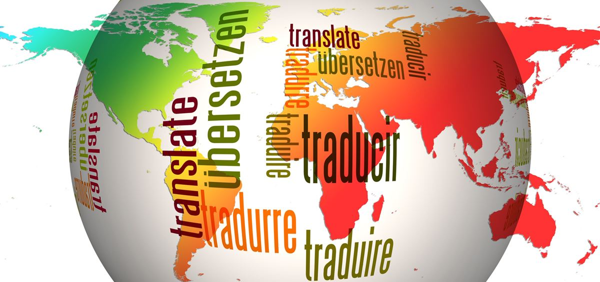

Tłumacz przysięgły języka ukraińskiego
Zajmujemy się dwoma językami - językiem ukraińskim oraz językiem rosyjskim. Wszystkie tłumaczenia przekładamy na język polski, lub z języka polskiego na ukraiński lub rosyjski. Tłumaczenia przysięgłe wykonujemy tylko dla języka ukraińskiego.
Nie. Tłumaczenia wykonujemy przede wszystkim zdalnie. Nasze biuro znajduje się w Poznaniu, jednak na tłumaczenia ustne dojeżdżamy do klienta.
Są to właściwie wszystkie dokumenty potrzebne w administracji publicznej. Poczynając od Urządu Komunikacji, na Urzędzie Stanu Cywilnego kończąc. Wyliczyć możemy takie dokumenty jak:
Nasz tłumacz wykonuje tłumaczenia uwierzytelnione, tzn. posiada uprawnienia do wykonywania tłumaczeń, nadane przez Ministerstwo Sprawiedliowści. Tego typu przekłady posiadają pieczęć tłumacza, wydaną przez Mennicę Państwową. Pieczęć opisuje dane osobowe tłumacza posługującego się uprawnieniami do tłumaczenia danego języka.
Ceny tłumaczeń przysięgłych różnią się od tłumaczeń zwykłych. Zapraszamy do zapoznania się z cennikiem klikając tutaj.
Tłumaczenia wykonywane są w następujących parach językowych:
Ceny tłumaczeń zwykłych różnią się od cen tłumaczeń przysięgłych. Zapraszamy do zapoznania się z cennikiem klikając tutaj.
Wykonamy dla państwa następujące rodzaje tłmaczeń:
Tłumaczenia konferencyjne, wykorzystywane podczas przemów i konferencji. Tłumacz oddaje znaczenie słów w języku obcym, jego ton i styl wypowiedzi.
Tłumaczenia symultaniczne, to najtrudniejszy typ tłumaczeń ustnych. Wymaga idealnego skupienia, zrozumienia mówcy i spokoju tłumacza. Tego typu tłumaczenia odbywają się z reguły w czasie rzeczywistym, przy pomocy zestawu słuchawkowego rozdawanego uczestnikom spotkania. W takim przypadku, tłumacz zazwyczaj ma do dyspozycji własną kabinę dźwiękoszczelną.
Tłumaczenia konsekutywne wymagają od tłumacza nietuzinkowej kreatywności, opanowania i dobrej znajomości językowej. Takie tłumaczenia wykorzystywane są przy spotkaniach w niewielkich grupach, czy rozmowach w tzw. "cztery oczy". Praca polega na powtarzaniu kolejnych fragmentów wypowiedzi swojego klienta, przetłumaczonych na drugi język.
Przyczytaj więcej o języku ukraińskim i Ukrainie, klikając tutaj.